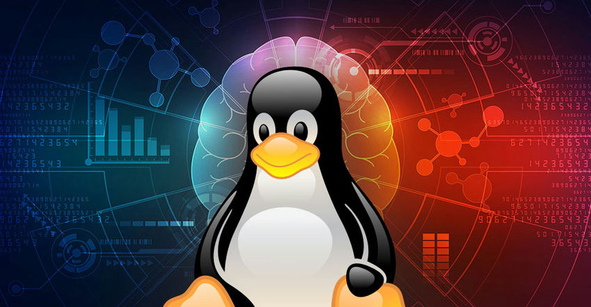
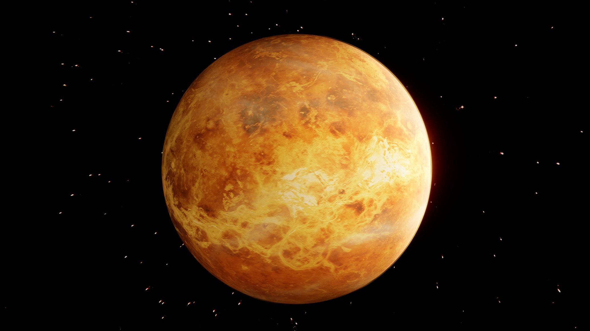

.jpg)
Linux
Diese Woche haben wirintesiv mit Linux gearbeitet. Linux ist ein Open-Source-Betriebssystem, das für seine Stabilität,
Sicherheit und Flexibilität bekannt ist. Es wird häufig auf Servern, Desktops und eingebetteten Systemen
eingesetzt. Eines der Hauptmerkmale von Linux ist sein Kernel, der die Kommunikation zwischen Hardware
und Software ermöglicht. Linux unterstützt eine Vielzahl von Dateisystemen, darunter ext4, XFS und Btrfs,
die jeweils unterschiedliche Vorteile bieten.
Was ist Linux?
Linux ist ein offenes Betriebssystem, dessen Quellcode frei zugänglich ist. Das ist ein ganz entscheidender Punkt, der Linux von anderen Programmen unterscheidet. Jeder kann mithelfen, Linux weiterzuentwickeln. Ausserdem ist die Software kostenlos. Linux basiert auf Unix, das in Rechenzentren und an Universitäten zum Einsatz kommt. Linux wurde von dem finnischen Programmierer Linus Torvalds entwickelt. Im Jahr 1991 hat Torvalds sein Betriebssystem öffentlich vorgestellt. Der Kernel ist das Herzstück von Linux. Der Kernel ist für alle massgeblichen Prozesse verantwortlich. Er kümmert sich um die Systemressourcen und organisiert das Prozessmanagement. Der Kernel ist ausserdem für das Speicher- und Dateimanagement verantwortlich und dafür zuständig, dass alles mit der Hardware zusammenarbeitet. Ausserdem hat Linux eine ganze Reihe von GNU-Tools an Bord. Diese Tools helfen dem Nutzer, die Systemressourcen zu verwalten. Und wenn man zum Beispiel zusätzliche Software installieren oder die Sicherheitseinstellungen ändern willst, sind sie auch super. Die Wahrscheinlichkeit, sich bei Linux einen Virus oder Schadsoftware einzufangen, ist deutlich geringer als bei anderen Betriebssystemen wie z. B. Windows. Das liegt auch daran, dass Linux nicht so viele Nutzer hat. Die Sicherheitsmassnahmen werden auch ständig weiterentwickelt.
Am Anfang war Linux vor allem für Computerfreaks interessant, aber das hat sich inzwischen geändert. Viele grosse Unternehmen und Institutionen nutzen Linux. Auch für "einfache" Anwender ist das Betriebssystem inzwischen eine interessante Alternative. Mittlerweile gibt es jede Menge verschiedene Linux-Distributionen, zum Beispiel Ubuntu oder Mint, und das beste daran: Sie sind kostenlos. Die beiden Varianten gibt's sowohl in der 32-Bit- als auch in der 64-Bit-Version. Ausserdem sehen beide echt schick aus und erinnern stark an Windows. Für Windows-Umsteiger sind sie daher echt gut geeignet. Für Linux gibt's auch kostenlose Office-Pakete wie OpenOffice oder LibreOffice oder das Grafikprogramm Gimp. Damit haben Sie neben dem Betriebssystem auch noch weitere wichtige Programme. Auch Internetbrowser wie Firefox und E-Mail-Clients wie Thunderbird sind dabei. Übrigens ist das Maskottchen und unverwechselbare Erkennungszeichen von Linux ein kleiner Pinguin namens Tux. Es ist die angebliche Verwendung als umgekehrtes Akronym "Tux uses X", das auf das unter Linux gebräuchliche X Window System anspielt.
Fazit
Diese Woche hatte ich viel Spass beim Arbeiten mit Linux. Besonders das Thema der verschiedenen Befehle im Terminal fand ich sehr interessant, da sie eine zentrale Rolle bei der Verwaltung und Nutzung von Linux-Systemen spielen. Ich freue mich darauf, mein Wissen in zukünftigen Projekten anzuwenden und weiter zu vertiefen.
Weekly random Facts
Diese Woche fange ich mit einem neuen Abschnitt an, der "Weekly random Facts" heisst. In diesem Abschnitt werde ich jede Woche einen interessanten Fakt über ein Thema meiner Wahl vorstellen. Diese Woche geht es um die Venus, den zweitnächsten Planeten zur Sonne in unserem Sonnensystem.
Planet der Woche
Heute stelle ich euch die Venus vor. Sie ist der Planet, der der Sonne am nächsten ist. Die Venus ist
nach der römischen Göttin der Liebe und Schönheit benannt, was gut zu ihrem hellen und leuchtenden
Erscheinungsbild passt. Sie ist der hellste Planet am Nachthimmel. Deshalb wird sie auch
"Morgenstern" oder "Abendstern" genannt. Man kann sie kurz vor dem Sonnenaufgang oder direkt nach
dem Sonnenuntergang sehen.
Die Oberfläche der Venus sieht ganz anders aus, als man denkt. Sie ist von dichten Wolken aus
Schwefelsäure umgeben. Diese reflektieren das Sonnenlicht und sorgen für ihre helle Erscheinung.
Unter dieser Wolkendecke sind die Temperaturen fast 500 Grad heiss. Das macht die Venus heisser als
den Merkur, obwohl sie näher an der Sonne ist.
Die Venus hat keine Monde und dreht sich sehr langsam um sich selbst. Ein Venustag dauert länger als
ein Venusjahr. Sie ist ähnlich gross und aufgebaut und wird deshalb oft als die "Schwester der Erde"
bezeichnet.
Ich finde es spannend, dass die Venus auch der Planet des Sternzeichens Waage ist. Da ich selbst
eine Waage bin, fühle ich mich diesem wunderschönen Planeten besonders verbunden.